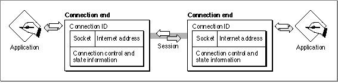

Connections, Connection Ends, and Connection States
A connection is an association between two sockets that supports the flow of data between the clients of those sockets in a reliable way. Each socket can maintain concurrent ADSP connections with several other sockets, but there can be only one ADSP connection between any two sockets at one time. For example, a single socket on node A can have multiple concurrent sessions consisting of one connection to a socket on node B, one connection to a socket on node C, and one connection to a socket on node D.When you establish an ADSP connection end, you allocate a nonrelocatable block of memory called a connection control block (CCB) in which ADSP stores state informa-
tion about the connection end. When you initialize the connection end, ADSP uses the CCB to set up control information that it maintains and uses for synchronizing communi-
cation with the other socket client and for error checking.You can read the CCB fields to gain information about the current state of the connection end. In addition to the unique AppleTalk internet address associated with a socket, each instance of a connection end has associated with it a connection ID that identifies it. You can open a connection for a socket and close that connection without actually removing the connection end, and then open another connection for the same socket. When you close a connection, the socket number remains associated with the connection, as do the data structures whose memory you allocated. ADSP uses this to ensure that any data meant for the old connection end is not delivered to the new connection end using the same socket number and data structures.
ADSP cannot deliver packets to a connection end based on the AppleTalk internet socket address alone. The connection ID ensures that a packet is delivered to the specific connection end for which it was intended. You call the new connection ID (
dspNewCID) routine to cause ADSP to assign a connection ID to the connection end before you open a connection. ADSP assigns a connection ID number, which it includes in every packet that it delivers from your connection end to a remote connection end.Figure 5-3 ADSP connection ends and their components

Figure 5-3 shows two connection ends and the client applications that use them to participate in a session with each other over an ADSP connection. This figure shows
the components that constitute a connection end.At any time, either end of a potential ADSP connection can initiate a session. Also, either end of the connection can tear down the connection when it is no longer needed.
No communication can occur over a half-open or closed connection.
- When two connection ends establish communication, the connection is considered an open connection.
- When both connection ends terminate the connection and dispose of the connection information each maintains, the connection is considered a closed connection.
- If one connection end is established but the other connection end is unreachable or has disposed of its connection information, the connection is considered a half-open connection.
To prevent a half-open connection from tying up resources, ADSP automatically closes any half-open connection that cannot reestablish communication within two minutes and informs its client that the connection is closed. Under these circumstances, ADSP will call the application-supplied completion routine for any pending asynchronous ADSP routine, if one was provided. Otherwise, the pending ADSP routine will return to the calling program with an
errStateerror message. If you attempt to call an ADSP routine on a half-open connection, ADSP also returns theerrStateerror message.